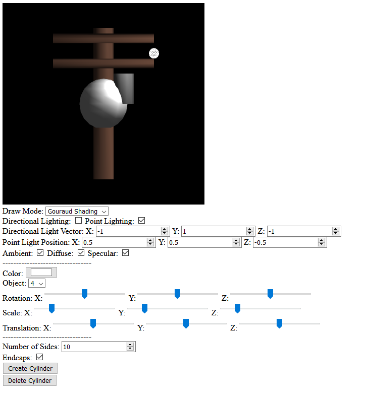

Autumn Moulios (amoulios)
CSE 160 Programming Assignment 2
4/25/2021
Assignment 2 Driver HTML Page
Javascript Code
Cylinder Class
By default my power lines model is displayed in the 3D scene, and can be edited using the ui

Instructions:
Type a number into the first box (e.g. 5) to define how many sides a created shape will have.
There are two Draw Modes: WireFrame (No Shading) and Solid (Flat Shading). These affect the whole scene when chosen.
The "Cylinder" dropdown menu allows the user to select one of multiple cylinders in the 3D scene and transform it using the sliders below.
 Transformations:
The first row handles rotations around the x, y, and z axes respectively.
The second row handles the scale along these axes in the same order.
The third row handles translation along these axes.
Transformations:
The first row handles rotations around the x, y, and z axes respectively.
The second row handles the scale along these axes in the same order.
The third row handles translation along these axes.
 Clicking the "Create Cylinder" button will make a cylinder with the user's specified attributes/transformations:
Clicking the "Delete Cylinder" button will remove the cylinder selected in the "Cylinder" dropdown menu.
Clicking the "Create Cylinder" button will make a cylinder with the user's specified attributes/transformations:
Clicking the "Delete Cylinder" button will remove the cylinder selected in the "Cylinder" dropdown menu.